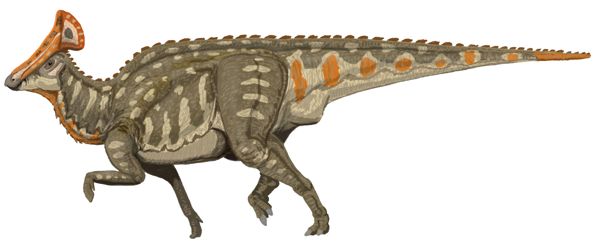

Hubo muchos tipos de dinosaurios, entre los que figuran algunos de los animales más grandes y más largos que han existido jamás. Durante sus 165 años sobre la Tierra, los distintos grupos de dinosaurios se adaptaron a muchos entornos. Vivieron en todas las zonas y en todos los climas. También tuvieron que adaptarse a otros animales y a otros dinosaurios que competían con ellos por la comida y el cobijo. Por eso hubo tantos tipos de dinosaurios. Había carnívoros bípedos (de dos patas), herbívoros cuadrúpedos (de cuatro patas) de cuello largo, herbívoros bípedos con pico, herbívoros cuadrúpedos con cuernos y cola corta, herbívoros cuadrúpedos con placas óseas...y muchos más!
Los dinosaurios "pico de pato" usaban el pico para cortar hojas y tallos para comer También tenian cientos de dientes en la parte posterior de la boca que usaban para aplastar la comida antes de tragarla. Tenían cuatro mandibulas, cada una con tres hileras de unos 60 dientes: un total de 720. Se renovaban cuando estaban desgastados, asi que a lo largo de su vida tenian miles de dientes.
El pico estaba recubierto de hueso y era lo bastante afilado para cortar plantas.

Algunos ejemplos son:
Los ceratópsidos son una familia que incluye a todos los dinosaurios con cuernos. La familia Ceratopsidae no puede dividirse fácilmente, pero muchos paleontólogos creen que hubo dos grupos de ceratópsidos de collar corto y el de los de collar grande . Las formas de collar grande eran al parecer más evolucionadas en general que las de collar corta y surgieron un poco más tarde en el Cretácico Tardío precisamente antes de que terminara la era de los dinosaurios. Todos los ceratópsidos tenían cuernos en la nariz y sobre los ojos, así como un collar óseo en la parte de atrás de la cabeza, sobre el cuello.
La otra característica obvia de los ceratópsidos fue el pico óseo curvo de la mandíbula superior, que les permitía arrancar ramas de hojas resistentes.
La función de la gola y de los tres cuernos faciales distintivos ha inspirado largas discusiones. Aunque se vean tradicionalmente como armas defensivas contra depredadores, las últimas teorías proponen que es más probable que estas características fueron utilizadas durante el cortejo sexual y exhibiciones de dominancia.
Algunos ejemplos son:
Estos dinosaurios se caracterizan principalmente por un desplazamiento cuadrúpedo, además de poseer una cabeza proporcionalmente pequeña con un pico aplanado y una doble hilera de púas o placas óseas dispuestas a lo largo del dorso. Hablando en términos generales, son herbívoros medios a grandes con las pequeñas cabezas y los cuellos largos, poseían un cráneo largo. Tienen los brazos mucho más cortos que las piernas, un par de púas hacia arriba o hacia fuera según lo sugerido por los nuevos hallazgos del extremo de la cola, de hombros construidos pesadamente a menudo con una espina hacia fuera de ellos a un ángulo incierto, y de dos filas de las espinas dorsales o de las placas que van de detrás la cabeza del extremo de la cola.
El Stegosaurus es el único con placas grandes y sin espinas dorsales. Parecen haber conservado cinco dedos en la mano, pero solamente tres dedos funcionales por pie. Los miembros son inusualmente acolumnados para los dinosaurios, y los brazos son robustos.
Algunos ejemplos son:
Las pesadas armaduras, formando un buen blindaje en el dorso de los anquilosáuridos y sus colas engrosadas en mazas óseas, los hacían superficialmente similares a los extintos gliptodontes producto de la evolución convergente.
Los anquilosáuridos son raros como especímenes en el registro fósil. Muchos sólo se conocen por fragmentos de hueso.
Los anquilosáuridos presentaban una gruesa armadura, sumada a una variedad de espinas y nódulos. Muchos anquilosáuridos tenían masas prolongadas de hueso formando un núcleo al final de sus colas, hecho de dos nódulos óseos alargados, el hueso formante del núcleo estaba embebido dentro de la piel, mientras que los dos nódulos se fusionaban a las vértebras y, en determinados casos, entre sí.
Algunos ejemplos son:
Gracias a sus adaptaciones, los sauropodomorfos eran capaces de ramonear en las copas de los árboles, a mayor altura que cualquier otro herbívoro contemporáneo. Finalmente, los más grandes saurópodos, como Supersaurus, Diplodocus y Argentinosaurus, alcanzaron los 30 o 40 metros de largo y llegaron a pesar entre 60 y 100 toneladas o incluso más.

Los sauropodomorfos fueron inicialmente bípedos, pero conforme fueron alcanzando mayor tamaño, evolucionaron hasta convertirse en cuadrúpedos graviportales. También tuvieron grandes fosas nasales, y pulgares retraídos con grandes garras, las cuales pudieron haber sido usadas para defenderse, aunque su adaptación defensiva primaria fue su gran tamaño.
Algunos ejemplos son:
Como bien podemos imaginar, los dinosaurios herbívoros basaban su dieta en nutrientes de origen vegetal, provenientes principalmente de las hojas de los árboles, arbustos y vegetación de pradera que inundaban de verdor las fértiles tierras de la Era de los Dinosaurios.
Según la estructura de sus dientes y mandíbulas, así como el largo de sus cuellos o la presencia de picos y otras estructuras anatómicas vinculadas a la alimentación, los dinosaurios herbívoros eran capaces de alimentarse a base de brotes tiernos, helechos y hojas de los árboles, así como de recursos vegetales algo más endurecidos como frutos, piñas u hojas aciculares de la asombrosa variedad de plantas existentes en aquella época.
Así que podemos decir que los herbívoros comían...
Los dinosaurios carnívoros tenían como característica principal unos dientes curvados, aserrados y puntiagudos. Estos colmillos parecían auténticos cuchillos que les servían para morder y desgarrar a su presa.
Otra característica típica de los carnívoros es que su cabeza suele ser corta y grande y está sobre un cuello robusto, fuerte y muy musculado que ayuda en gran medida a la hora de sujetar e inmovilizar a su presa durante la mordida.
A este tipo de dinosaurio además hay que dividirlo en tres subgrupos para definirlos mejor y poder ser capaces de decir con mayor precisión qué comían los dinosaurios carnívoros. Y es que podían ser predadores, carroñeros y piscívoros.
Recientes artículos sugieren que la voz de los dinosaurios se parecía a la de sus descendientes, las aves. Por tanto, lejos de emitir ese rugido tan característico, estos «terroríficos lagartos» prehistóricos arrullarían, gruñirían o ulularían.
Un equipo de investigadores de Estados Unidos y Canadá sostiene que, muy probablemente, los dinosaurios emitían un sonido parecido al arrullo de una paloma o el gruñido nasal de un avestruz, muy alejado de los que proferiría un mamífero. Muchas especies ya extintas, como los dinosaurios, se consideran miembros de la familia de los arcosaurios. La investigación apunta a que las habilidades vocálicas de los dinosaurios de gran tamaño habrían sido similares.
Más concretamente, apareció en dieciséis linajes del reino animal, entre los que se incluyen los cocodrilos y las aves, por lo que podrían haberlo desarrollado los dinosaurios. Según sugiere la anatomía de las aves, es bastante probable que, al igual que estas, los dinosaurios no tuviesen cuerdas vocales sino sacos aéreos, es decir, órganos similares a la laringe de los humanos pero bifurcados y alojados en un punto más profundo del tórax. Por consiguiente, si la voz de los dinosaurios era parecida a la de las aves, quizás recordase a la de las especies más grandes e intimidantes que existen en nuestros días, como los avestruces y los casuarios.
A continuación un video sobre como sonaban los dinosaurios. Puede que no sea completamente acertado.